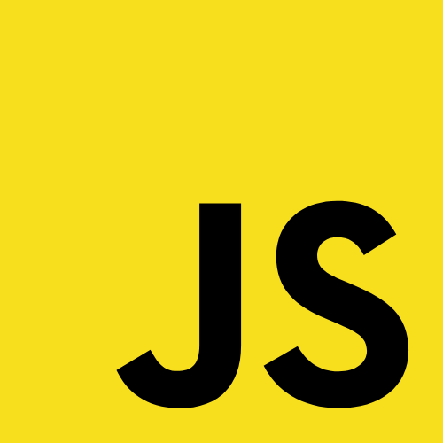

Contents
About Me
自己紹介を記載しています。
Skils
これまでに習得した、Webスキル・デザインスキルの詳細を記載しています。
Works
訓練校で作成した作品と、自身で取り組んだ作品を掲載しています。
About Me
Name
Y.T
Birth
1988年5月1日生まれ(33歳)
Like
料理
現在一人暮らしですが、自炊率90％以上の料理好きです。
休日には少し手の込んだ料理を作り、食べてもらった人に「美味しい♪」と言ってもらえることが楽しみです。
DIY
車の簡単な整備や、家具のリメイク等をすることがあります。大きいものですと、キッチンのカウンターテーブルを自作しました。
経験したことのない作業や、途中で分からない事が出てきても諦めずに、やり方を調べながら完成できた時はとても達成感があります。
ボディメイク
1日15分の筋トレと週2回のダイエットメニューを3年間継続しています。
ふとしたきっかけで始めましたが、気付けば日課になっていました。
※下線付き文はクリックで写真が表示されます。
※下線付き文はタップで写真が表示されます。
PR
小売業に約10年間従事しましたが、テクノロジーを用いたものづくりでの他者貢献したいと考え、Webエンジニアへの転身を決意。
現在はWeb開発、システム開発の学習で更なるスキルアップに取り組んでいます。
WebSkils
HTML5

静的サイトのコーディングのみでなく、動的サイトのマークアップまで可能です。
CSS3

PC向けサイトのみでなく、レスポンシブを用いたスマホ向けレイアウトまで実装可能です。
WordPress

訓練校にて、既存テーマのカスタマイズや、オリジナルテーマの実装を経験しています。
jQuery

本ページに使用しているもの以外にも、スライドショーやスライドトグル等を実装可能です。
JavaScript
オンラインコンテンツで学習中です。ブラウザを利用した簡単なクイズゲームや、Webアプリの作成ができます。
Phython

訓練校にて基礎構文やモジュールを学習しました。オンラインコンテンツで学習継続中です。
DesignSkils
Photoshop

写真の加工・修正から、バナーやOPG画像の作成等を経験しています。
illustorator

架空の企業のロゴやポストカードの他、名刺等の作成経験があります。
XD

Webサイト制作のワイヤーフレーム、デザインカンプの作成が可能です。


{kind=link}
{kind=link}
{kind=link}